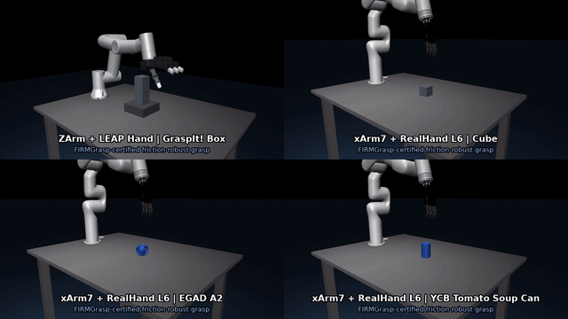

I study contact-rich dexterous manipulation under uncertainty, connecting ideas from optimization-based control, risk-sensitive optimization, kinodynamic motion planning, belief estimation, and policy learning to make manipulation with multi-fingered hands more reliable when object pose, friction, contact modes, and target geometry are only partially observed.
My early- to mid-career doctoral research focused on robust stochastic planning, safety-critical control through Boolean-composed CBFs and distributional reinforcement learning, and distributed multi-agent coordination under uncertainty. This work established the theoretical and algorithmic foundations in stochastic decision-making, uncertainty quantification, and learning-based control that now underpin my research program in dexterous robotic manipulation.
current work
My recent work spans dexterous grasp synthesis, safety-critical dexterous control, visuo-tactile policy learning, and uncertainty-aware decision-making for contact-rich manipulation. A central objective of this research is to develop poly-articulated robotic systems—including fixed-base serial-chain manipulators, bimanual platforms, humanoids, and mobile manipulators—that can infer task-relevant uncertainty from proprioceptive, exteroceptive, and tactile observations, and synthesize control policies that explicitly negotiate competing performance, robustness, and safety specifications under partial observability and contact uncertainty.
On the learning and representation fronts, my work develops SE(3)-equivariant generative models for contact-grounded grasp synthesis, neural belief representations for multimodal uncertainty estimation, and risk-sensitive imitation-learning and diffusion-policy formulations for robust contact-rich manipulation. My goal with these efforts is to integrate geometric structure, multimodal sensing, probabilistic inference, and risk-aware policy optimization into a unified framework for reliable dexterous autonomy in uncertain and dynamic environments.
I validate the aforementioned ideas in simulation, leveraging optimization modeling frameworks (CasADi), QP and NLP solvers (qpsolvers, IPOPT), dynamics libraries (Pinocchio), physics simulators (MuJoCo, Drake, Isaac Sim), and reinforcement learning frameworks and environments (Isaac Lab, Safety Gymnasium), as well as on physical robotic hardware comprising serial and branched kinematic chains equipped with proprioception-only and tactile-sensorized multi-fingered hands (see Robots).
Applications
I target problems in dexterous grasping and manipulation spanning:
Click to enlarge.

Robust Grasping & Dexterous Manipulation
Robust visuo-tactile dexterous grasping under uncertain object pose, friction, and contact modes.
Clinton Enwerem, John S. Baras, and Calin Belta, “Does Imitation Learning Preserve Temporal Robustness in Dexterous Manipulation? An Expert-Learner Comparison Across Task Execution Speeds,” arXiv preprint, 2026. arXiv link
@online{enweremDoesImitationLearningPreserve2026,
title = {Does Imitation Learning Preserve Temporal Robustness in Dexterous Manipulation? An Expert-Learner Comparison Across Task Execution Speeds},
author = {Enwerem, Clinton and Baras, John S. and Belta, Calin},
year = {2026},
eprint = {2609.01453},
eprinttype = {arXiv},
eprintclass = {cs.RO},
doi = {},
url = {https://arxiv.org/abs/2609.01453},
pubstate = {prepublished},
keywords = {Computer Science - Robotics},
}
arXiV
Clinton Enwerem, John S. Baras, and Calin Belta, “Grasp Execution Without a Planner: Configuration-Space Grasp Distance Fields with Certified Safety & Guaranteed Quality,” arXiv preprint, 2026. arXiv link
@online{enweremGraspDistanceFields2026,
title = {Grasp Execution Without a Planner: Configuration-Space Grasp Distance Fields with Certified Safety \& Guaranteed Quality},
author = {Enwerem, Clinton and Baras, John S. and Belta, Calin},
year = {2026},
eprint = {2608.00600},
eprinttype = {arXiv},
eprintclass = {cs.RO},
doi = {10.48550/arXiv.2608.00600},
url = {https://arxiv.org/abs/2608.00600},
pubstate = {prepublished},
keywords = {Computer Science - Robotics, Electrical Engineering and Systems Science - Systems and Control, Mathematics - Optimization and Control},
}
arXiV
Clinton Enwerem, John S. Baras, and Calin Belta, “FIRMGrasp: A Friction-Informed Risk Margin for Robust Grasp Synthesis,” arXiv preprint, 2026. arXiv link
@online{enweremFIRMRobustGraspSynthesis2026,
title = {FIRMGrasp: A Friction-Informed Risk Margin for Robust Grasp Synthesis},
author = {Enwerem, Clinton and Baras, John S. and Belta, Calin},
year = {2026},
eprint = {2607.25049},
eprinttype = {arXiv},
eprintclass = {cs.RO},
doi = {},
url = {https://arxiv.org/abs/2607.25049},
pubstate = {prepublished},
keywords = {Computer Science - Robotics, Computer Science - Machine Learning},
}
arXiV
Clinton Enwerem, John S. Baras, and Calin Belta, “EquiDexFlow: Contact-Grounded SE(3)-Equivariant Dexterous Grasp Generative Flows,” arXiv preprint, 2026. arXiv link
@online{enweremEquiDexFlowContactGroundedSE32026,
title = {EquiDexFlow: Contact-Grounded SE(3)-Equivariant Dexterous Grasp Generative Flows},
author = {Enwerem, Clinton and Baras, John S. and Belta, Calin},
year = {2026},
eprint = {2606.12728 [cs.RO]},
eprinttype = {arXiv},
eprintclass = {cs.RO},
doi = {10.48550/arXiv.2606.12728},
url = {http://arxiv.org/abs/2606.12728},
pubstate = {prepublished},
keywords = {Computer Science - Robotics, Computer Science - Machine Learning},
}
Peer-Reviewed
2026
CDC
Clinton Enwerem, John S. Baras, and Calin Belta, “Risk-Constrained Belief-Space Optimization for Safe Control under Latent Uncertainty,” To appear in the Proceedings of the 65th IEEE Conference on Decision and Control (CDC), 2026.
@misc{enweremRiskConstrainedBeliefSpaceOptimization2026a,
title = {{Risk-Constrained Belief-Space Optimization for Safe Control under Latent Uncertainty}},
author = {Enwerem, Clinton and Baras, John S. and Belta, Calin},
year = {2026},
month = dec,
eprint = {2604.03868},
eprinttype = {arxiv},
url = {http://arxiv.org/abs/2604.03868},
doi = {10.48550/arXiv.2604.03868},
note = {\textit{To appear in the Proceedings of the 65th IEEE Conference on Decision and Control (CDC).} {\href{http://arxiv.org/abs/2604.03868}{\extlink{arXiV Link}}}},
}
IROS
Clinton Enwerem, Shreya Kalyanaraman, John S. Baras, and Calin Belta, “Variational Neural Belief Parameterizations for Robust Dexterous Grasping under Multimodal Uncertainty,” To appear in the Proceedings of the 2026 IEEE/RSJ International Conference on Intelligent Robots and Systems (IROS).
@misc{enweremVariationalNeuralParameterizations2026a,
title = {{Variational Neural Belief Parameterizations for Robust Dexterous Grasping under Multimodal Uncertainty}},
author = {Enwerem, Clinton and Kalyanaraman, Shreya and Baras, John S. and Belta, Calin},
year = {2026},
month = oct,
eprint = {2604.25897},
eprinttype = {arxiv},
url = {http://arxiv.org/abs/2604.25897},
doi = {10.48550/arXiv.2604.25897},
note = {\textit{To appear in the Proceedings of the 2026 IEEE/RSJ International Conference on Intelligent Robots and Systems (IROS).} {\href{http://arxiv.org/abs/2604.25897}{\extlink{arXiV Link}}}},
}
2025
CDC
Clinton Enwerem, Aniruddh G. Puranic, John S. Baras, and Calin Belta, “Safety-Aware Reinforcement Learning for Control via Risk-Sensitive Action-Value Iteration and Quantile Regression,” In the Proceedings of the 2025 IEEE 64th Conference on Decision and Control (CDC), pp. 4890–4895, 2025.
@inproceedings{enwerem2025safety,
title = {{Safety-Aware Reinforcement Learning for Control via Risk-Sensitive Action-Value Iteration and Quantile Regression}},
author = {Enwerem, Clinton and Puranic, Aniruddh G. and Baras, John S. and Belta, Calin},
booktitle = {2025 {IEEE} 64th Conference on Decision and Control (CDC)},
pages = {4890--4895},
year = {2025},
month = dec,
doi = {10.1109/CDC57313.2025.11312575},
note = {{\href{http://arxiv.org/abs/2506.06954}{\extlink{arXiV Link}}}},
}
2024
CDC
Clinton Enwerem, Erfaun Noorani, John S. Baras, and Brian M. Sadler, “Robust Stochastic Shortest-Path Planning via Risk-Sensitive Incremental Sampling,” In the Proceedings of the 2024 IEEE 63rd Conference on Decision and Control (CDC), pp. 1087–1094, 2024.
@inproceedings{enwerem2024robust,
title = {{Robust Stochastic Shortest-Path Planning via Risk-Sensitive Incremental Sampling}},
author = {Enwerem, Clinton and Noorani, Erfaun and Baras, John S. and Sadler, Brian M.},
booktitle = {2024 {IEEE} 63rd Conference on Decision and Control (CDC)},
pages = {1087--1094},
year = {2024},
month = dec,
doi = {10.1109/CDC56724.2024.10886577},
note = {{\href{http://arxiv.org/abs/2408.08668}{\extlink{arXiV Link}}}},
}
ECC
Clinton Enwerem and John S. Baras, “Safe Collective Control under Noisy Inputs and Competing Constraints via Non-Smooth Barrier Functions,” In the Proceedings of the 2024 European Control Conference (ECC), pp. 3762–3768, 2024.
@inproceedings{enwerem2024safe,
title = {{Safe Collective Control under Noisy Inputs and Competing Constraints via Non-Smooth Barrier Functions}},
author = {Enwerem, Clinton and Baras, John S.},
booktitle = {2024 {European} Control Conference (ECC)},
pages = {3762--3768},
year = {2024},
month = jun,
eprint = {2311.03284},
eprinttype = {arxiv},
doi = {10.23919/ECC64448.2024.10591027},
}
LCSS
Clinton Enwerem and John S. Baras, “Formation Tracking for a Class of Uncertain Multiagent Systems: A Distributed Kalman Filtering Approach,” IEEE Control Systems Letters, Volume 8, 2024.
@article{enweremFormationTrackingDistributedKalmanFiltering2023,
title = {{Formation Tracking for a Class of Uncertain Multiagent Systems: A Distributed Kalman Filtering Approach}},
author = {Enwerem, Clinton and Baras, John S.},
year = {2024},
journal = {IEEE Control Systems Letters},
volume=8,
abstract = {Current approaches to estimating the states of agents in multiagent formation tracking relies heavily on either filtering local observations from sensors fitted on each agent, or observations from external sensors in an inertial frame of reference. Such approaches are largely unreliable, centralized, and not practical for real-life settings. Accordingly, we propose a formation tracking scheme that relies on distributed Kalman filtering (DKF) to obtain agents' states. Our approach exploits the underlying shared network to reconstruct the state of each agent by pooling relative state measurements from its neighbors in the network. A weighted consensus-like control law, defined in terms of the computed relative state estimates, is consequently applied to achieve formation maintenance, and a trajectory-error-minimizing controller is designed for the tracking component. Finally, to validate our proposed technique, we present results from numerical simulations and real multi-robot experiments.},
langid = {english},
}
2023
CoDIT
Clinton Enwerem and John S. Baras, “Consensus-Based Leader-Follower Formation Tracking for Control-Affine Nonlinear Multiagent Systems,” In the Proceedings of the 9th International Conference on Control, Decision and Information Technologies (CoDIT), 2023.
@inproceedings{enweremConsensusBasedFormationTracking2023,
title = {{Consensus-Based Leader-Follower Formation Tracking for Control-Affine Nonlinear Multiagent Systems}},
author = {Enwerem, Clinton and Baras, John S.},
booktitle = {9th International Conference on Control, Decision and Information Technologies (CoDIT)},
year = {2023},
month = jul,
eprint = {2309.09156},
eprinttype = {arxiv},
doi = {10.1109/CoDIT58514.2023.10284199},
}